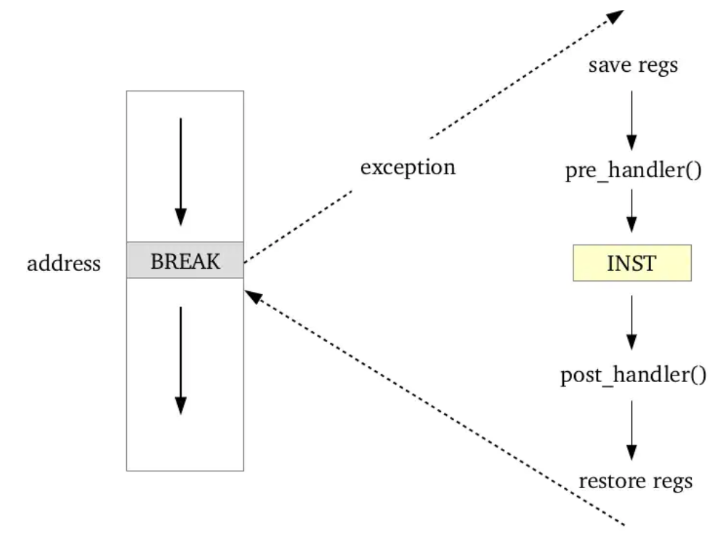

FTrace - How to use?
Đậu Hồng Quân - (quandh21@viettel.com.vn), Trung tâm nghiên cứu công nghệ mạng Viettel, Hà Nội, 2/2018
Hí anh em, đợt vừa rồi mình có debug ra một cái lỗi liên quan đến đồng bộ trong ORAN, công lớn là nhờ ftrace. Mặc dù cái bug kia ko phải là cao siêu và có thể có cách giải quyết đơn giản hơn nhưng mình vẫn viết cái technote nho nhỏ này để chia sẻ những gì mình biết về ftrace, để cho anh em nào chưa biết thì biết, mà biết thì biết. Thực ra chỉ một phần kiến thức ở bài viết này là mình biết về ftrace trong lúc debug cái lỗi đồng bộ kia, phần còn lại là mình tìm hiểu sau khi debug thành công bởi vì mình thấy công cụ này hay mà mình có vẻ chỉ biết một ít về nó. Tuy vậy, bài technote nhỏ này cũng không thể nói hết được về ftrace, do đó các anh em cao thủ nếu biết thêm gì thì hãy giúp mình bổ sung để bài technote này đầy đủ và hay ho hơn nhé. Bài viết này sẽ có 2 nội dung chính, thứ nhất là kiến thức về ftrace (bao gồm khái niệm, cách hoạt động, các tính năng,...) và thứ hai chính là các ví dụ cụ thể được áp dụng ftrace để giải quyết. Các ví dụ hay case study có thể nằm rải rác xuyên suốt mục nội dung. Cả mục lục nội dung lẫn mục lục ví dụ sẽ được cung cấp để anh em có thể chọn đọc theo ý thích. Đ** dài dòng nữa, vào thôi.
Khái niệm tracing và ftrace
Theo định nghĩa từ wiki, trong lĩnh vực software thì tracing là “specialized use of logging to record information about a program’s flow of execution”, ngoài ra các điểm đặt log kia còn được gọi là điểm probe. Việc này không có gì xa lạ, ví dụ như khi chúng ta đặt log printf (hoặc printk) trong code của chúng ta để thực hiện debug, đấy chính là chúng ta đang tracing. Tuy nhiên cách đặt log debug này có vẻ khá tốn công sức và khó scale, mỗi lần muốn trace một phần code nào đó thể phải tự tay đặt thêm log. Do đó, sự ra đời của các công cụ tracing là điều cần thiết (mặc dù trong nhiều trường hợp thì việc tự đặt log vẫn là lựa chọn số 1).
Ftrace (function tracer) là một công cụ (hoặc cũng có thể coi là một tracing framework) được sinh ra để giúp các linux developer có thể biết được những gì đang xảy ra bên trong kernel. Một số tính năng mà ftrace có thể thực hiện như là:
- Một kernel function được gọi bao nhiêu lần, thời điểm function được gọi?
- Ai gọi tới function này?
- Function này gọi tiếp function nào?
- Latency cao nhất gây ra bởi function?
Công cụ này do đó có thể được sử dụng trong việc debugging, phân tích các vấn đề về latency & performace của kernel.
Kiến trúc của một tracing tool (kể cả ftrace) thường sẽ gồm 3 phần: Tracing Implementation, Tracing Framework, Frontend. Tracing Implementation của ftrace sẽ được mô tả ở mục 2, Tracing Framework sẽ được mô tả ở mục 3, Frontend sẽ được mô tả ở mục 4.
Nguyên lý hoạt động của tracing và ftrace?
Có 2 kiểu tracing là: “static tracing” và “dynamic tracing”. Nguyên lý của hai kiểu tracing này giống nhau ở chỗ, chúng đều sẽ đặt thêm các điểm probe vào trong các hàm thực thi, nhưng khác nhau ở thời điểm đặt probe.
Static tracing, là phương thức tracing bằng cách đặt trực tiếp các điểm probe tĩnh (static probe) trong source code. Cách đặt probe này thì tải xử lý thấp nhưng phải được đặt các điểm probe này ở build time. Dynamic tracing là phương thức đưa các điểm probe động (dynamic probe) vào trong code, cho phép định nghĩa các điểm probe ở runtime. Tải xử lý của “dynamic probe” sẽ cao hơn nhưng cách tracing này lại linh hoạt hơn.
Ftrace là framework hỗ trợ cả static probes (function tracing, event tracing, ..) và cả dynamic probes (kprobes, uprobes,..).
Tại các điểm probe sẽ là các hàm của ftrace đặt vào, giúp ftrace có thể tracing, logging, measuring,... các function cần thiết. Sau đó, các thông tin về tracing, logging, measuring,... sẽ được ftrace đẩy lên cho người dùng thông qua sysfs (sẽ được đề cập đến ở phần kiến trúc ftrace).
Static tracing
Đối với static probes, để có thể tracing function thì kernel phải được build gcc với option –pg. Khi được build với –pg, gcc sẽ đưa thêm một đoạn mã code vào điểm probe là phần mở đầu của các kernel function, đoạn mã này có thể được kích hoạt để chuyển hướng thực thi sang phần “plugin” của ftrace (hàm mcount) trước khi quay lại thực thi hàm chính. Như vậy, cũng cần phải để ý là nếu ta kích hoạt function tracing (khiến plugin kia được thực thi) thì hiệu năng của hệ thống cũng sẽ ảnh hưởng, do đó khi hệ thống chạy như thông thường thì ftrace sẽ được disable.
Dynamic tracing
Cơ chế điển hình nhất về dynamic tracing trong kernel chính là kprobes. Đây là cơ chế cho phép ta có thể thay đổi assembly code của Linux kernel ở runtime (thêm vào một lệnh assembly khác) để có thể trace khi nào lệnh này được gọi. Ta có thể đặt một breakpoint tại bất kì địa chỉ code của kernel và cung cấp một handler routine để gọi khi con trỏ lệnh chạm tới breakpoint.
Khi CPU chạy tới breakpoint có địa chỉ là x, một quy trình gọi là “trap” sẽ xảy ra: các thanh ghi CPU được lưu lại, kprobes thực hiện “pre_handler”, thực hiện lệnh tại địa chỉ x, kprobes thực hiện “post_handler”, các thanh ghi CPU được khôi phục và quay trở thực hiện lệnh ở sau điểm breakpoint.

Để sử dụng kprobe thì phải làm như thế nào? Thông thường thì ta sẽ phải viết một kernel module và insert module này vào kernel. Kernel module này sẽ cần 3 thành phần: địa chỉ breakpoint, pre_handler() và post_handler().
Để tránh việc phải viết kernel module và insert nó, ftrace cho phép ta implement các pre_handler(), post_handler() một cách đơn giản hơn chỉ thông qua sysfs. Phần sau sẽ nêu rõ cách để thực hiện kprobes với ftrace.
Kiến trúc của ftrace
Ftrace bao gồm các 2 công cụ (cũng có thể coi là tính năng) chính là profilers và tracers. Trong đó, profilers tập trung vào việc thống kê các thông số, historgram,.. của function. Còn tracers lại tập trung vào mô tả chi tiết về function đó hơn. Cái này đến phần mô tả chi tiết và ví dụ về profiler và tracer sẽ hiểu rõ hơn.
Các Ftrace profilers và tracers sẽ export các thông tin tracing ra tracefs, thông thường tracefs sẽ được mount tại /sys/kernel/debug/tracing.
Tracefs bao gồm các thư mục sau:
Trong đó, một số file quan trọng nhất bao gồm:
Tracers
Ta có thể liệt kê các tracer hiện có trong system qua file available_tracers:
Mỗi tracer được có một nhiệm vụ riêng, được mô tả dưới đây:
Ở một thời điểm, ta chỉ có thể sử dụng một tracer, tracer hiện tại được thể hiện qua file current_tracer.
Function tracer
Function tracing sẽ là câu trả lời của ftrace cho các câu hỏi: function được gọi như thế nào? (Cụ thể là gọi bởi function nào? gọi lúc nào?....). Để bật tính năng function tracing thì current_tracer phải được set là “function”.
Hình dưới đây mô tả các file trong tracefs phục vụ cho function tracing. Trong đó các input là set_filter_functions (các hàm nào sẽ được tracing), tracing_on (bắt đầu tracing), trace_options (các option bổ sung cho việc tracing). Output sẽ là trace (file chưa log tracing in ra), trace_pipe (cũng là file chưa log tracing nhưng ở dạng stream).
Function tracer examples
Eg.1. Function tracer - tracing specific funcs
Tiến hành tracing các hàm có tiền tố tcp*. Có thể thấy output của trace cung cấp cho ta một số thông tin:
- Hàm được gọi: tcp_poll(), tcp_sendmsg(),...
- Process gọi tới hàm đó: sshd
- PID: 18470
- CPU thực hiện call trace tới hàm: CPU 0
- Timestamp (CLOCK_MONOTONIC) tại thời điểm hàm được gọi.
- Hàm parent gọi tới hàm này. Sock_poll() gọi tới tcp_poll(), inet_sendmsg() gọi tới tcp_sendmsg().
Eg.2. Function tracer - debug lỗi nháy đồng bộ 10000s
Eg.3. function_graph tracer - tracing specific funcs.
Ví dụ này giống như Ví dụ 1 nhưng thay function tracer bằng function_graph.
Có thể thấy, function_graph cung cấp cho ta một cái nhìn “dễ nhìn hơn” về call trace, ngoài ra nó còn cung cấp thời gian function được gọi (DURATION).
Eg.4. Tracing kernel call của một tiến trình cụ thể.
Ở một số tình huống, ví dụ như phân tích một tiến trình cụ thể, ta chỉ muốn khảo sát các kernel function được call bởi một tiến trình đó. Ta có thể thực hiện điều này thông qua file set_ftrace_pid. Ví dụ dưới đây thực hiện tracing các kernel function được gọi từ tiến trình phc2sys.
Eg.5. Tracing function của một kernel module
Như ở Ví dụ 1, ta đã tracing được các hàm có tiền tố tcp* bằng cách echo ‘tcp*’ > set_ftrace_filter. Bây giờ muốn tracing function của một kernel module cụ thể thì làm thế nào? Đơn giản thôi, ví dụ muốn tracing function của driver i40e:
Eg.6. Function này được gọi từ function nào?
Ở Ví dụ 3, nếu dùng function_graph không thể cho ta thấy được function được gọi như thế nào thì có thể dùng options/func_stack_trace của function tracer. Ở ví dụ này, ta thực hiện tracing hàm do_adjtimex thì có thể thấy nó lần lượt được call từ posix_clock_realtime_adj, hàm này lại được gọi từ system call SYSC_clock_adjtime.

Eg.7. Function này sẽ tiếp tục call đến function nào?
Ở Ví dụ 6, ta đã “trace ngược” một function được gọi như thế nào, vậy còn “trace xuôi” một function gọi đến functio nào tiếp theo thì như thế nào? Ví dụ dưới dây tracing hàm posix_clock_realtime_adj lần lượt gọi tới do_adjtimex(), ntp_validate_timex(),... Có thể thấy hai chức năng “trace xuôi” và “trace ngược” code này rất tiện cho việc đọc source code kernel.
Eg.8. Liệt kê các kernel function có thời gian chạy lớn hơn ngưỡng 10ms.
Khi dùng tracer là function_graph, ftrace sẽ so sánh DURATION của function với giá trị của ‘tracing_thresh’, nếu DURATION lớn hơn thì ftrace sẽ liệt kê function đó ra. Đơn vị của tracing_thresh là micro giây. Ví dụ nếu ta muốn liệt kê các hàm cụ thể có thời gian thực hiện lớn hơn 10ms:
What is next for tracers?
- Wakeup và wakeup_rt tracer
- Irqsoff tracer
- Hwlat tracer
- Kprobe tracer
Profilers
Ftrace sử dụng một số các profilers sau:
Function profiler
Function profiler cung cấp các chỉ số thống kê của các kernel function, do đó nó phù hợp nếu ta muốn khám phá xem function nào đang được sử dụng nhiều, function nào chiếm nhiều thời gian.
Ví dụ 9. Thống kê một số kernel function cụ thể.
Ví dụ ta muốn thống kê các function liên quan tới tcp protocol đang chạy trong kernel:
Ở ví dụ trên, kết quả của function profiler cung cấp cho ta các thông tin về các function tcp* được thực hiện dưới kernel trong khoảng thời gian sleep 10s:
- Các function tcp_* được thống kê ở 2 CPU: CPU0 (function0), CPU1 (function1)
- Cột Hit là số lần hàm được gọi.
- Cột Time là tổng số thời gian hàm đó thực hiện.
- Cột Average là thời gian trung bình một hàm đó thực hiện.
- Cột s^2 là độ lệch chuẩn của thời gian hàm đó thực hiện (độ lệch chuẩn phản ánh giao động của giá trị), độ lệch chuẩn càng lớn chứng tỏ trong phân bố, giá trị thời gian thực hiện giao động là lớn.
Kprobe profiler
(NA)